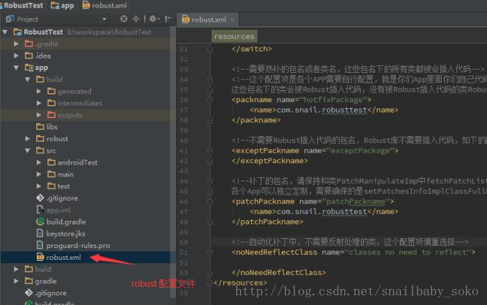

最新消息：波及全球数十国的勒索病毒WannaCry的攻击实施者现已收到4.2万余美元赎金，但这些汇款仍在银行账户未被取走。另外安全专家称：该木马加密使用AES加密文件，并使用非对称加密算法RSA 2048加密随机密钥，每个文件使用一个随机密钥，理论上不可破解，所以即使你对病毒发布者汇款，他也不可能确认你的密钥，所以请不要向病毒窗口显示的账户提供赎金。
本篇来自 BmobSnail 的投稿，介绍了如何使用美团的热更新框架 Robust，感兴趣的朋友赶快看一看吧！
BmobSnail 的博客地址：
http://blog.csdn.net/snailbaby_soko
相信很多人都认识了解过 热修复、热更新、热补丁(对于这个技术也没有特别标准的一种叫法，下面我统一叫热更新)，之后的一年里，各种热更新方案如雨后春笋般出现，比较耳熟能详的就有 Nuwa、Tinker、Andfix 和 Dexposed 等等，他们之间的区别以及优缺点就不在这里讨论了，鉴于它们的实际使用和局限性，美团的开发团队就脑洞大开了。
就去年 Google 高调发布了 Android Studio 2.0，其中最重要的新特性 Instant Run，实现了对代码修改的实时生效（热插拔）。美团开发团队在了解 Instant Run 原理之后，实现了一个兼容性更强的热更新方案，这就是产品化的hotpatch框架—–Robust
对于 Robust 的原理我们后面的文章再讨论，本篇只针对想快速上手的入门讲解，想先了解 Robust 的原理以及技术核心的同学请移步到：
Android热更新方案Robust
http://tech.meituan.com/android_robust.html
Android热更新方案Robust开源，新增自动化补丁工具
http://tech.meituan.com/android_autopatch.html
美团 Robust 的 github demo 地址
https://github.com/Meituan-Dianping/Robust
先介绍一下 Robust 的适用场景，与以往大家认识的热更新一样，对线上事故很难有即时生效的解决方式，每次发版都如临深渊如履薄冰，毕竟就算再完善的开发测试流程也无法保证不会将 Bug 带到线上，特别是新 app 刚上线，一个 bug 不只是影响到几个几十个用户，一些创业性 app 的崩溃或者 bug 可能直接导致用户卸载和永不使用。对于这种致命的又无可奈何的问题，Robust 就是时候该站出来摸摸你的头，轻声而又自信的说“别怕，你还有我”。
1. 集成了 Robust 后，生成 apk。保存期间的混淆文件 mapping.txt，以及 Robust 生成记录文件 methodMap.robust
2. 使用注解 @Modify 或者方法 RobustModify.modify() 标注需要修复的方法
3. 开启补丁插件，执行生成 apk 命令，获得补丁包 patch.jar
4. 通过推送或者接口的形式，通知 app 有补丁，需要修复
5. 加载补丁文件不需要重新启动应用
首先远程依赖 Robust 的一些插件，用于辅助生成 patch.jar 的。此时我们不需要深入了解，只需要知道它是用来辅助的就好。在项目最外层的 build.gradle 添加两处插件:
classpath ‘com.meituan.robust:gradle-plugin:0.3.3’classpath ‘com.meituan.robust:auto-patch-plugin:0.3.3'然后在项目的 build.gradle 添加:
此时，还没完成第一步呢，别急，需要手动 copy 一份 robust.xml 的配置文件到app的目录下，该文件各个配置注释的很清楚，若没特殊要求，不需要修改

好了，准备工作完成。有了这些东西，待我们需要修复的时候就可以一键生成补丁 patch.jar 了。但别急，你还不知道怎么加载补丁呢…
先解释一下，如上图标注所说了，在生成 apk 的时候使用 apply plugin:’robust’，该插件会生成打补丁时需要的方法记录文件 methodMap.robust，该文件在打补丁的时候用来区别到底哪些方法需要被修复，所以有它才能打补丁。而上文所说的还有 mapping.txt 文件，该文件列出了原始的类，方法和字段名与混淆后代码间的映射。这个文件很重要，可以用它来翻译被混淆的代码。但也不是必须的，如果不需要混淆，可以不保留。这两个文件在生成apk后，分别在
build/outputs/robust/methodsMap.robust，build/outputs/mapping/mapping.txt(需要开启混淆后才会出现)，我们需要自己分别拷贝到 app/robust 下，在 app 目录新建个叫 robust 的文件夹，把这两个文件放进去就 ok 了。
此时，完成了第二步了。我们得到了 apk ，mapping.txt，methodMap.robust ，有了它们我们再继续生成补丁 patch.jar。然而我踩到过的坑是，没有签名文件一样可以完成上述步骤，但在安装apk的时候会被告知该 apk 已损坏，所以按普通签名那样加上签名文件就行了。
我们新建的工程很简单，只有2个button，一个用来加载补丁，一个用来跳转。如图，首页和没加载补丁时跳转的页面。刚才我们说，要怎么使用补丁文件，看下面加载补丁的按钮事件里面，看到了没，就那么一句话就能实现加载补丁了。
new PatchExecutor(上下文我懂，xxx，callback我也懂).start()中间的xxx是个什么东西啊，还需要自己写？带着这个疑问去思考一下，就不难发现，要加载补丁肯定得知道 patch.jar 放在哪啊是吧，打开看一眼(不要害怕只有很少代码)，为了方便展示，就把不太重要的三个方法缩起来了。
copy 方法是普通文件拷贝的IO流，verifyPatch 方法本来是验证补丁有效性的，后来发现对普通使用者没有那么高要求，就改成了备份补丁的回调了，ensurePatchExist 方法就检测补丁存在与否，好了大概知道其它的方法就详细介绍下主要方法 fetchPatchList，回顾一下上面的xxx再联想到这里吧，既然我们要加载补丁，那么我们得知道补丁在哪啊，这个方法就是把补丁找出来给上面那个谁用的。
所以说，补丁的位置你可以根据拉取下来保存的位置来找出来，把路径给 setLocalPath 就好。再有就 setPatchesInfoImplClassFullName 的包名需要和 robust.xml 配置的一样
我们所需要做的跳转后效果是修改一下 textview 显示内容而已，那么在被修改的页面需要怎么标注被修改的方法呢，就像这样，先科普一下，在 robust 的注意事项里面已经提到过，修改方法和字段会有一些局限性，那是因为 android 本身 ProGuard 的内联、优化导致的。
所以要绕过这个本身的问题，要必须遵循一些规律了…以后再介绍这个。修改完这些，我们再去 build.gradle 修改一下，开启打补丁那个，关闭生成apk那个。之后再在终端执行一遍生成apk的命令行。直到终端那里出现 auto patch end successfully(最后 build failed 是正常的，别紧张孩子)。再然后就是要把 patch.jar push 到手机目录路径下啦。那些自己推送下载的请自行调试更正，确保路径正确。还有记得给应用读写内存卡的权限
既然到了这里，我们好像所有条件都具备了啊，那么就点 LOAD PATCH 按钮看看发生什么事吧，如果看到 apply result true 那么就大功告成了。
最后来个效果图：
谢谢美团开发团队的开源和贡献，还要特别感谢Robust作者之一的张梦同学，为 Robust 挖下的坑(开玩笑哈哈哈)，我们努力排坑只希望能让大家更简便的使用，以后的路还很长…大家有什么建议或意见，请到 github 上面去留言。
每天学习累了，看些搞笑的段子放松一下吧。关注最具娱乐精神的公众号，每天都有好心情。
如果你有好的技术文章想和大家分享，欢迎向我的公众号投稿，投稿具体细节请在公众号主页点击“投稿”菜单查看。
欢迎长按下图 -> 识别图中二维码或者扫一扫关注我的公众号：
最新收录